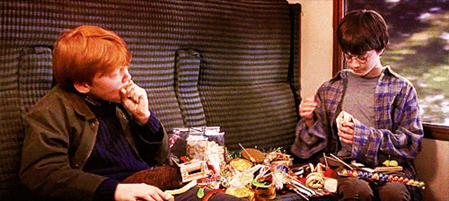

Конфеты Гарри Поттер, кажется, даже не нуждаются в представлении. Они являются одними из самых популярных сладостей не только в нашем мире людей, но и в мире волшебников. Сам профессор Дамболдор в детстве попробовал одну из драже, и ему попалась со вкусом рвоты. После этого, по его словам он потерял к ним интерес, однако когда Гарри Поттер предложил ему дать им ещё один шанс, волшебник с радостью согласился. Он долго выбирал конфетку, которая на глаз оказалась совсем непримечательной, но увы.. она оказалась с ушной серой.

Сам Гарри впервые попробовал это лакомство, когда впервые ехал в школу. Рон Уизли предупредил его, что у конфет может быть абсолютно любой вкус, апельсина, либо перечной мяты, шоколада, но признался, что однажды его старшему брату Фреду попалась карамелька со вкусом соплей.
По цвету конфет Гарри Поттер Берти Ботс нельзя понять какая попадётся вам. Под одним цветом идёт сразу два аромата - один вкусный, и другой с каким-нибудь мерзким привкусом или ароматом. Это настоящая лотерея! И от этого становится ещё азартней поедать конфеты Гарри Поттер, особенно в компании друзей! Ведь как интересно смотреть, что попадётся тебе или твоему другу.
На самом деле, огромное значение имеет, как человек ощущает вкус. Огромную роль в этом играют запахи. Специальная машина, а именно газовый хроматограф анализирует запахи различных вещей. Для начала машина целевой объект сначала растворяет, затем кипятит, и после этого нагревает до состояния паров, из которых получаются запахи. Затем анализируются химические составы и на их основе делаются вкусовые маркеры, которые и используют для отправной точки создания бобов Гарри Поттер.
Но иногда ароматы создаются и иным путем. Например, интересная история связана с конфеткой со вкусом рвоты. Рвота в конфетах Гарри Поттер была создана в попытках сделать аромат обычной пиццы. Но что-то пошло не так, из-за неудачного аромата сыра, вкус пиццы стал мягко сказать "не вкусным". И когда создатели решили задуматься над вкусом "рвоты" они сразу вспомнили про неудачный аромат бобов со вкусом пиццы. Чуть-чуть его видоизменили, и один из самых "громких" вкусов был рождён.
Конфеты Гарри Поттер Берти Ботс создал как раз некий волшебник по имени Берти Ботс. Он хотел создать необычные бобы с ароматами все различных фруктов, ягод, еды. Но совершенно случайно создал бобы со вкусом вонючего носка. На удивление, разочарование сменилось восторгом, когда создатель уже ставших известным нам под названием "бобы Гарри Поттер" почувствовал маркетинговый потенциал, и наладил производство так полюбившихся нам драже под девизом «Риск в каждой конфете!». Сейчас под производство компании Jelly Belly существует 20 вкусок конфет Гарри Поттер: банан, спелая вишня, свежескошенная трава, черный перец, вкус корицы, мыло, сосиска, зеленое яблоко, черника, грязь, лимон, мультифрукт, сопли, земляные червяки, рвота, зефир, арбуз, ушная сера, сахарная вата, протухшее яйцо.
Приобрести конфеты Гарри Поттер вы можете в нашем интернет магазине сладостей из Америки прямо сейчас! Рискните, какая же конфетка попадётся вам!